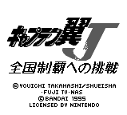
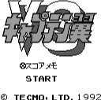

Captain Tsubasa - Nintendo Games
Table of Contents
|
Series Information
|
Gameboy Games
Nintendo Games
|
SNES Games
Captain Tsubasa J
|
Captain Tsubasa VS
Captain Tsubasa J

Genre:
Soccer simulation
Cross between cinematic simulation and actual real-time action. No information available at this time.
Captain Tsubasa VS

Genre:
Soccer simulation
No information available at this time.
Anime Video Game Resource Center © 1998 by
Luis A. Cruz